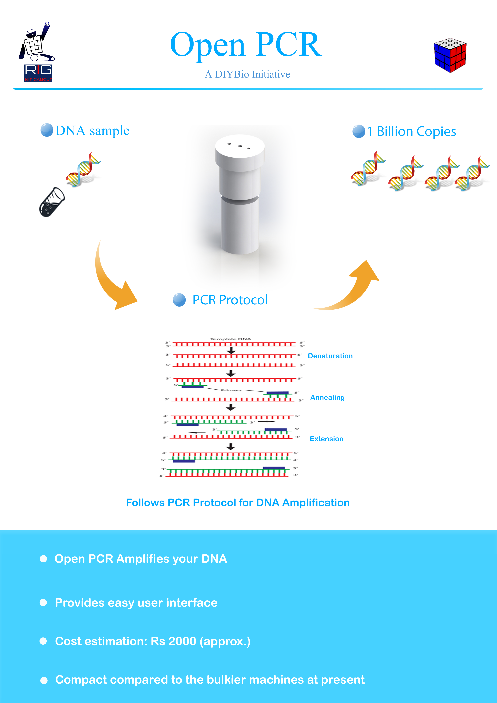

Open PCR
Open PCR is a DNA copier(Amplifier)
. The DNA Amplifier available in the market
always cost more than 1600$,Which makes the experiments with pcr a bit more costly
and not available for science guys. Since PCR is the basic step in genetic engineering
it is too hard to continue any experiments in biotechnology
I have designed a PCR machine under 300$, which can be completely controlled by
an android application. This machine runs the basic PCR protocol and replicates the dna
and gives you the same result as the normal PCR machine can give. The whole machine
can also be debugged using the android application. The first model of this machine have
released into DIY Bio community
CubePCR Poster
